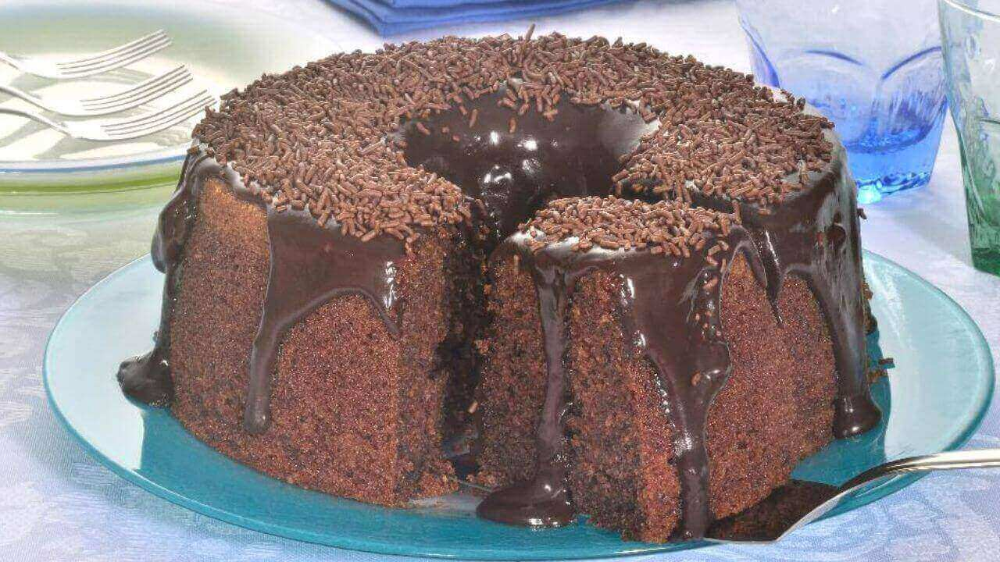
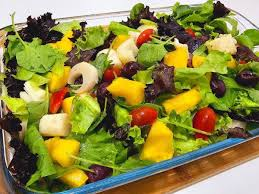

Joaquim Junior
Especialista em: Confeitaria e Massas 🍰🍝
234 Seguidores
129 Seguindo
3 Posts

Lasanha Bolonhesa
Por: Chef Joaquim
Tempo de preparo: 30/45 minutos
Dietas e restrições: Sem glúten
Tipo: Salgado
★★★★★

Bolo de Chocolate
Por: Chef Joaquim
Tempo de preparo: 50 minutos
Dietas e restrições: Sem lactose
Tipo: Sobremesa
★★★★☆

Salada Tropical
Por: Chef Joaquim
Tempo de preparo: 15 minutos
Dietas e restrições: Vegetariano
Tipo: Salgado
★★★★★